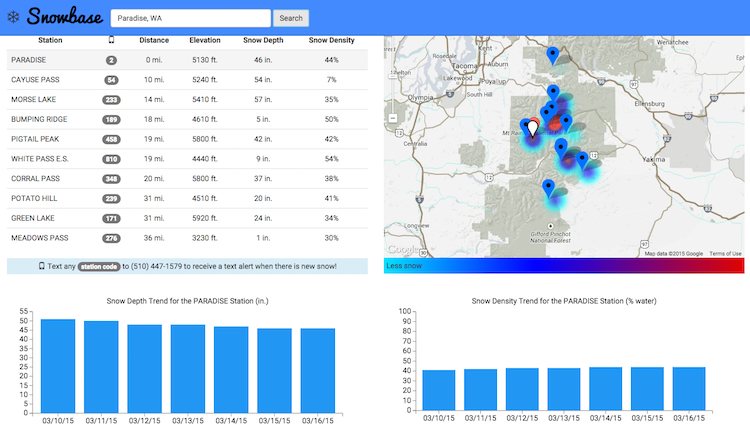
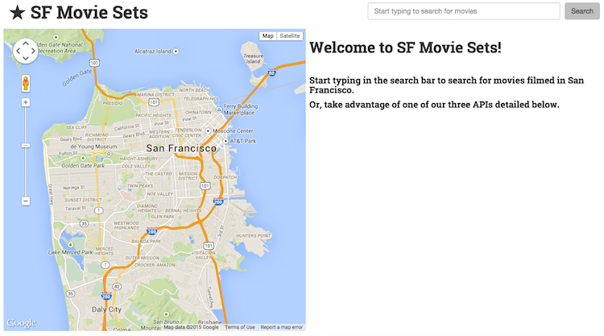
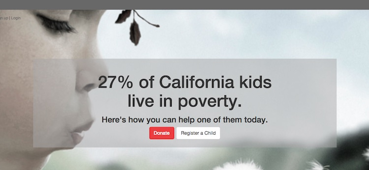
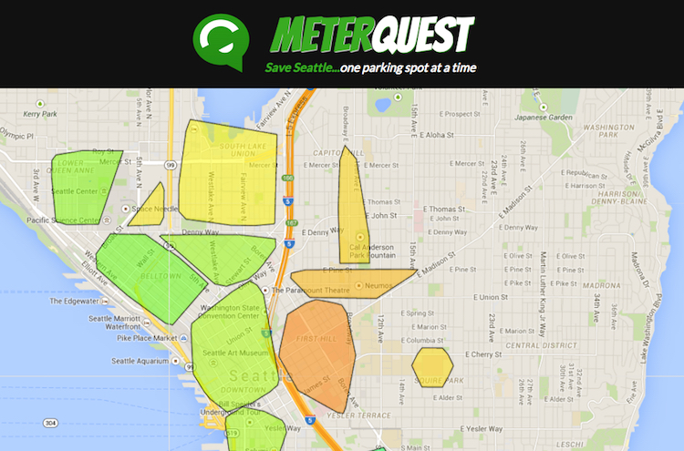

My career journey has taken me from fighting diseases from behind the laboratory bench, to fighting diseases on rivers and mountains, and finally to building online tools that help thousands of scientists fight diseases. I borrow from the analytical and scientific methods I learned as a research scientist and blend them with leadership skills from the outdoors to drive digital media ROI, and build successful teams in pursuit of creating essential resources. As an outdoor and endurance adventurer, I am attracted to the harsher alpine, arctic and desert environs, as well as traveling great distances under human power. The common threads of my career and outdoor pursuits include tenacity, compassion, and the ever useful sense of humor. Literally translated, my name means "rock of the mountain". While I endeavor to be as solid as my namesake implies, you won't catch me taking myself too seriously.
Solo Projects

December 2014 SnowBase connects winter backcountry enthusiasts to up-to-date snow pack conditions with one click. For those who are eagerly awaiting new snow, easy-to-use text alerts are available for over 860 SNOTEL mountain stations. Technologies: SQLite, PostgreSQL, Python, Flask, SQLAlchemy, JavaScript, jQuery, d3, Bootstrap, and HTML/CSS APIs: Powederlin.es SNOTEL API, Google Maps API, and Twilio API GitHub:Github.com/Piera/Project

January 2015 Quickly discover the locations where films were made in San Francisco with the SF Movie Sets web application. Utilize the API to find movies by year, to look up movie locations, or for a list of all movies made in San Francisco. Technologies: Python, Flask, Bootstrap, jQuery, JavaScript APIs: Google Maps API. Data provided by Socrata / DataSF GitHub:Github.com/Piera/Project-U-C
Hackathon Projects

February 2015 27% of California's kids live in poverty. 27Percent provides a channel for helping a child who is living in poverty to thrive through child-directed donations. This web application was prototyped with a small team and presented for the 2015 LWT Summit Hackathon. Technologies: Ruby on Rails, Bootstrap, HTML, and CSS

March 2015 MeterQuest makes it easy for drivers to quickly identify areas with open parking spaces, and to report or claim open parking spaces while earning points and badges. This application was developed on the weekend of March 20 - 22, 2015 as part of the Hack the Commute hackathon in Seattle. Technologies: AngularJS, Bower, CoffeeScript (server-side), CSS, Jade, JavaScript, Koa, LokiJS, Twitter Bootstrap APIs: SDOT ArcGIS Street Parking, Google Maps API, ArcGIS JavaScript API
Software Engineering Fellow, Hackbright Academy
Sep. 2014 - Dec. 2014
Completed highly selective and intensive full-stack software engineering fellowship with curriculum based on Python and the Flask microframework. Curriculum highlights include: Python, Flask, SQL, SQLAlchemy, JavaScript, jQuery, HTML, CSS, Git, and GitHub.
Front End Web Development Course, Hackbright Academy
May - Jul 2014
Hackbright Academy's Front End Web Development course is a part-time course covering: CSS/HTML, JavaScript, jQuery, Bootstrap, and DOM traversal.
Professional Experience:
Operations Director, CompareNetworks
Apr. 2011 - Aug. 2014
CompareNetworks provides targeted online B2B marketplaces for scientists, doctors, dentists and the pharmaceutical industry. Platforms include web and mobile content management systems; channels include email, video and print publications.
Collaborated cross-functionally to improve product comparison tools, SEO, performance, and traffic across 8 vertical properties including Biocompare
Directly managed and trained team of up to 20 employees for revenue recognition and product ROI
Owned customer success metrics for over 500 digital advertising accounts; acted as liaison between customers and engineering teams
Researched and launched two specialized product comparison search tools
Provided in-depth sales onboarding trainings and ongoing support for the sales team
Content Manager, Labcompare
Dec. 2009 - Mar. 2011
Built highly detailed and optimized online B2B technical product directory for laboratory scientists
Created online content that generated in excess of 2,000 contact leads per month
Produced and analyzed media for partnering advertisers across online and push channels